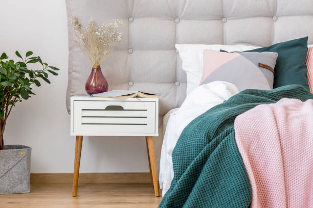

White & Walnut NightStand
The White & Walnut Nightstand is a perfect blend of modern simplicity and natural warmth. Crafted with a sleek white finish and complemented by rich walnut legs, this nightstand adds a touch of elegance to any bedroom decor. Featuring a spacious drawer for your bedside essentials and an open shelf for additional storage or display, it combines functionality with style. Its clean lines and timeless design make it a versatile piece that suits both contemporary and classic interiors.
$149
Dimensions: 18"W x 16"D x 22"H
Material: MDF, Walnut Veneer
Color: White, Walnut
Features: Easy to assemble, Sturdy walnut legs